The three properties, and the model they add up to
Muscle Mechanics
By the end of this lecture you should be able to…
Explain how sliding filaments turn overlap into force
Relate architecture — pennation and cross-sectional area — to force and speed
Describe the force–length, force–velocity and force–time relationships
Separate active from passive tension, and CC from PEC and SEC
Assemble the model F = F0 · a · FL · FV
Read a work loop, and say what its enclosed area means
Part 01
Where force comes from
Filaments, architecture, and the moment arm
From muscle to sarcomere
Force is generated at the bottom of this hierarchy
A muscle is bundles of fascicles, each a bundle of
fibres, each a bundle of myofibrils
A myofibril is a chain of sarcomeres laid end to end
The sarcomere is where the mechanics happens — everything above it is
packaging and plumbing
Each sarcomere is built from two protein filaments:
actin (thin) and myosin (thick)
Sarcomeres in series give a muscle
range and speed; sarcomeres in parallel give it
force. Almost every architectural fact in this lecture follows from
that one sentence.
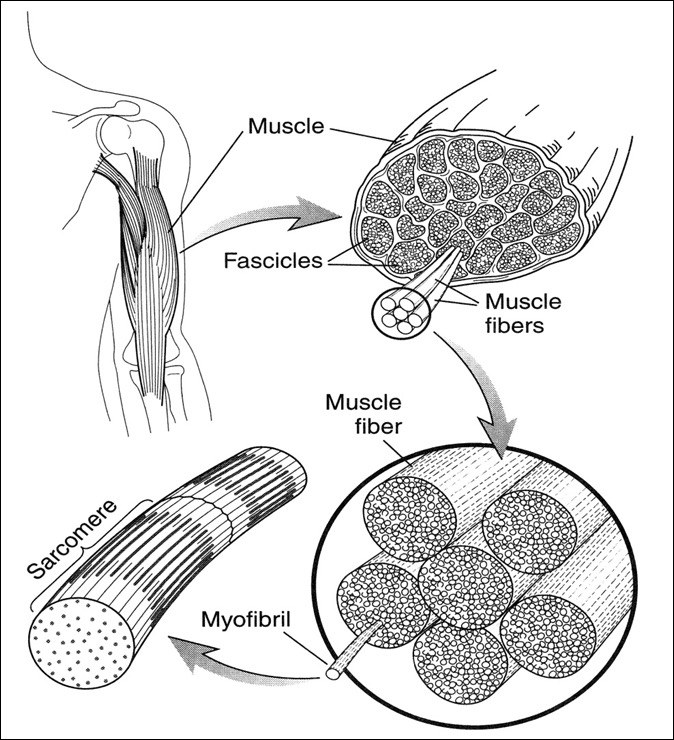
The sliding filament
Neither filament changes length — the overlap does
Force comes from one filament sliding over the other, not from
either one contracting
Actin and myosin keep the same length throughout
What changes is how much of the thick filament has thin filament
alongside it to pull on
More overlap means more myosin heads with somewhere to bind — up to the point
where the thin filaments start getting in each other's way
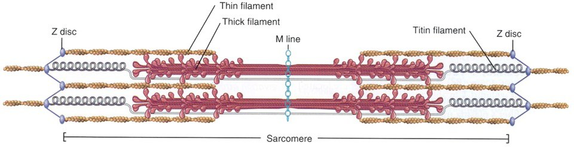
The sliding filament
Change the length and watch the overlap — and the force — change
The cross-bridge cycle
One head, one ATP, about ten nanometres
Side-pieces fixed along the myosin filament attach to binding sites
on actin, pull, then detach — over and over
One cycle moves the filaments about 10 nm relative to each other
One cycle produces about 2–10 pN of force
One cycle costs the hydrolysis of one ATP
A whole muscle's force is a great many of these happening at
once and out of step with each other. Heads are always attaching while others are
letting go, which is what makes the force smooth rather than ratchety.
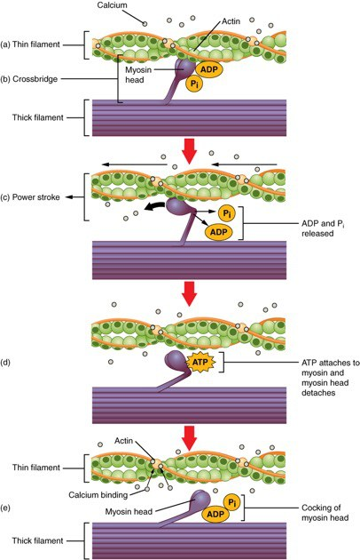
Muscle architecture
The same tissue, arranged four different ways
Parallel / fusiform — fibres run the length of the belly. Long fibres,
so large range and high shortening speed
Pennate / bipennate — fibres run at an angle to the tendon. Short
fibres, so many more of them fit
Pennation angle is the angle between the line of action of the muscle
and the direction of its fibres
It changes the direction of every fibre's force vector — and it changes with joint
angle, because the muscle keeps its thickness
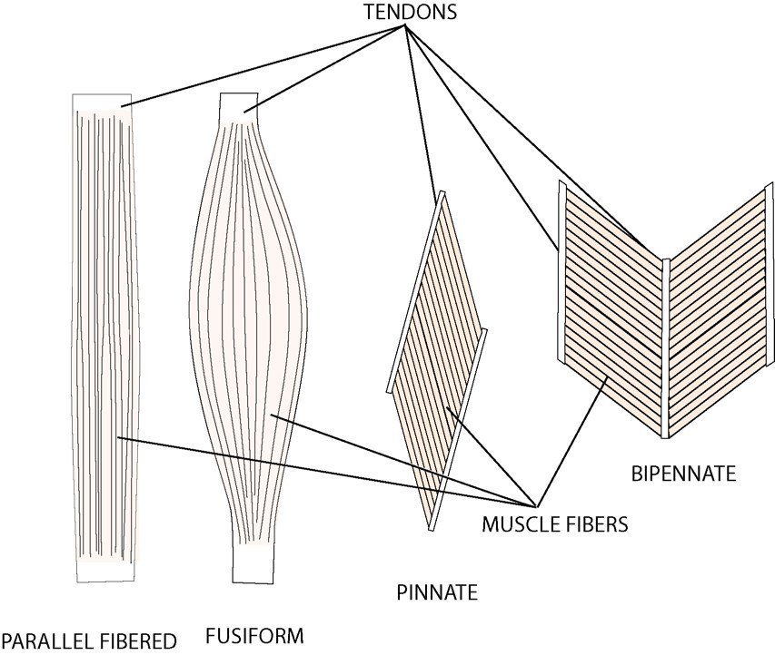
Physiological cross-sectional area
Count the sarcomeres in parallel — cut perpendicular to the fibres
The more sarcomeres side by side, the more force the muscle can produce
You count them by cutting perpendicular to the fibres, not
perpendicular to the muscle
For a pennate muscle those are different cuts, and the physiological one is much
the larger
Most muscle produces about 20 N per cm² of physiological
cross-sectional area
PCSA = muscle volume ÷ fibre length
Ffibre = PCSA × 20 N/cm²
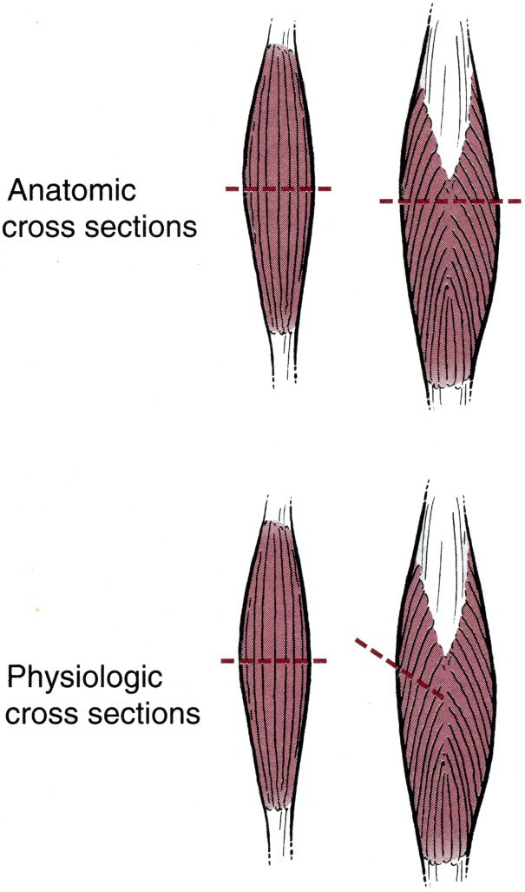
What pennation buys, and what it costs
The bipennate arrangement from two slides ago, with the numbers attached
Pennation, worked through
The same muscle volume, arranged two ways
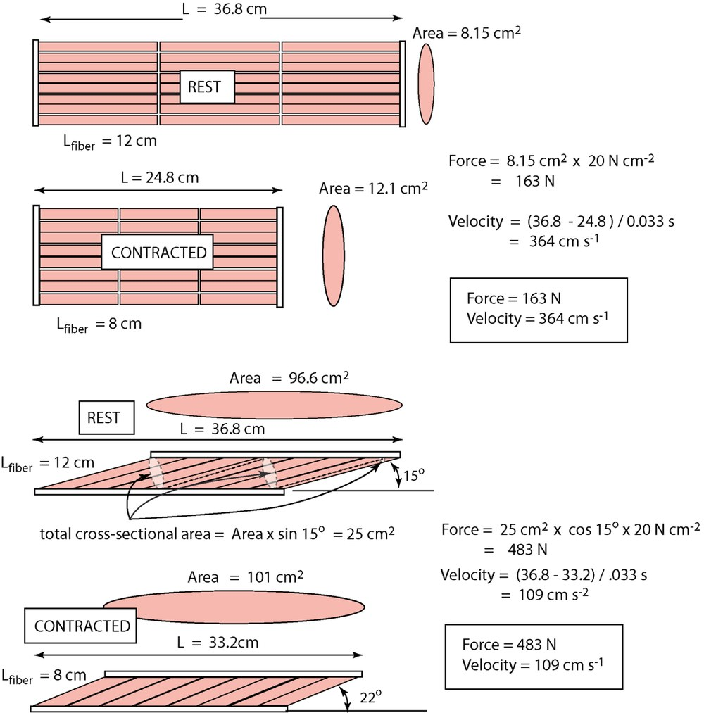
Force is not torque
The moment arm stands between the muscle and the joint
T = r(θ) · F
The moment arm is the perpendicular distance from the muscle's line of action to
the joint's axis of rotation
It changes with joint angle — it is a function, not a number
A bigger moment arm gives more torque for the same muscle force
But a bigger moment arm also means the muscle must shorten further and faster for
the same joint rotation
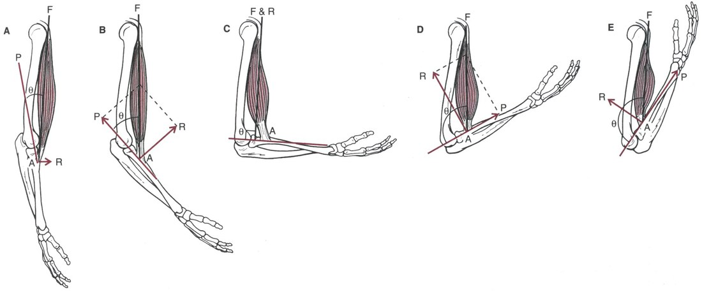
Force is not torque
Two things change at once as the joint rotates
Part 02
The three properties
Force–length, force–velocity, force–time
Three reductionist properties
Muscular force depends on length, on velocity, and on time
FORCE–LENGTH
How much force at this length. Set by filament overlap, plus passive
tissue once the muscle is stretched.
FORCE–VELOCITY
How much force at this shortening or lengthening speed. Set by
cross-bridge cycling rates.
FORCE–TIME
How much force yet. Force takes time to build and longer to
release, because calcium takes time to arrive and to be pumped away.
Taken one at a time these are reductionist
properties — each measured by holding the other two still. Real movement has all three
happening at once, and putting them back together is what Part 03 and the Virtual Muscle
Lab are for.
A mechanical model of muscle
One active element and two springs
Contractile component (CC) — the cross-bridges themselves, carrying
the force–length, force–velocity and activation behaviour
Parallel elastic component (PEC) — connective tissue alongside the
fibres, which takes load only when the muscle is stretched
Series elastic component (SEC) — tendon and cross-bridge elasticity,
in line between the CC and the bone
Everything the contractile component does reaches the skeleton
through the SEC. That is why tendon force can lag cross-bridge force,
and why a tendon can return energy the muscle never had to produce.
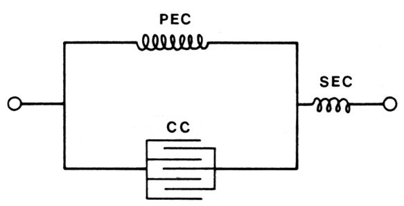
A mechanical model of muscle
Activate it, stretch it, and see where the force comes from
Force–length
The overlap story, plotted
Force depends on how much actin and myosin overlap
Too short: thin filaments interfere with each other and the thick
filament meets the Z disc
Too long: not enough overlap, so fewer heads can bind
In between there is an optimal length, and a short plateau where
every head has somewhere to pull
The insets on the figure are the same sarcomere pictures from
Part 01. The curve is not an empirical fit — each point on it is a geometry you can
draw.
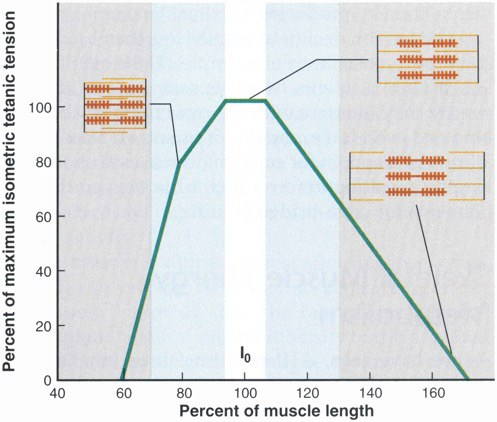
Active and passive tension
What you measure is the sum of the two
Tension is generated in active tissue — the cross-bridges — and in
passive tissue, which simply resists being stretched
Passive tension is zero below about optimal length, then rises
steeply as connective tissue goes taut
Add them and you get total tension, which is what a dynamometer
actually records
At long lengths most of the force is passive, and the muscle may be producing very
little of it
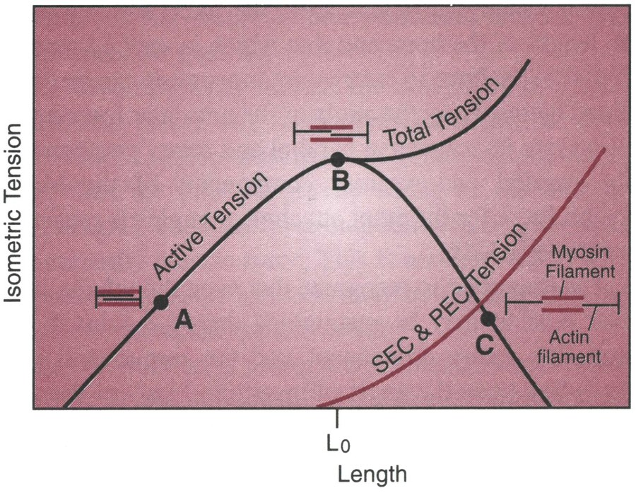
Force–length
Separate the two curves, then add them back
Force–velocity
The faster a muscle shortens, the less force it can produce
Concentric — the muscle shortens while producing force. The faster it
shortens, the less force, because cross-bridges have less time attached
Isometric — no movement, and maximum force on the shortening side
Eccentric — the muscle lengthens while producing force. Force keeps
climbing, to roughly 1.8 × maximum
That is why you can lower a load you cannot lift, and why eccentric work is such an
effective — and such a sore — training stimulus
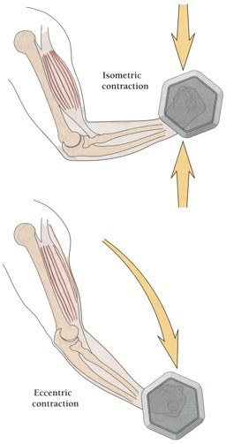
Force–velocity
Both halves, with the curvature exposed
Fibre type, and what training can move
The same shape, scaled differently
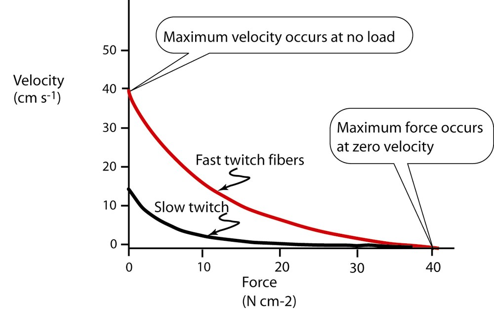
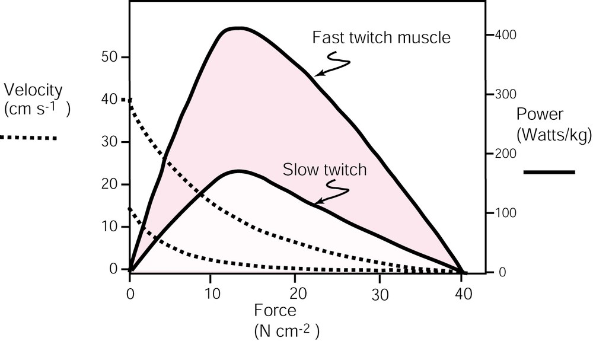
Fast-twitch fibres have a much higher vmax, so their curve
extends much further right
Both types reach similar force at zero velocity — the difference is speed,
not strength
Peak power is therefore far higher in fast-twitch muscle, and occurs at a
higher velocity
Training shifts the curve; it does not change its shape
Force–time
Force does not appear the instant it is asked for
Latent period — the stimulus has arrived and nothing has happened yet
Period of contraction — calcium is spreading and binding, and force
is building
Period of relaxation — calcium is being pumped away, and force decays
Relaxation always takes longer than contraction
For a single movement these delays are a curiosity. For a
cyclic one — pedalling, running, swimming — they decide when you must
switch the muscle on and off, and that is where Part 04 is going.
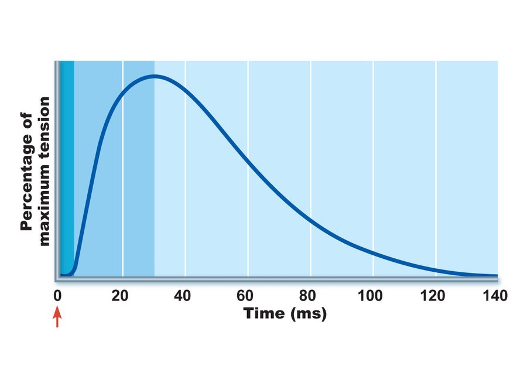
Force–time
Three muscles, the same three phases, very different clocks
Activation and deactivation
A sustained contraction has a delayed onset and a later offset
A held contraction produces an activation that lags the signal at both
ends
Rising takes roughly 10 ms; falling takes roughly
40 ms
Both come from the rate at which calcium spreads, binds, and is pumped back
This is part of — but not the whole of — the electromechanical delay
between the EMG signal and the force
Those two numbers, 10 ms and 40 ms, are the activation and
deactivation time constants in the Virtual Muscle Lab. They are the reason its optimal
timing is always early.
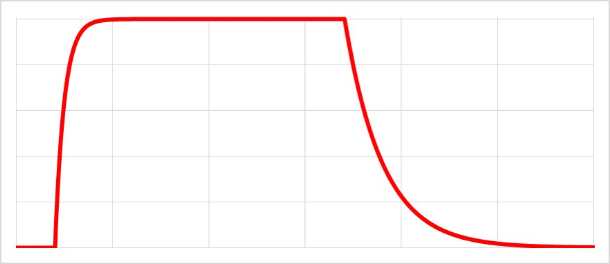
Activation and deactivation
What is asked for, against what is delivered
Part 03
Putting them together
One surface, and one equation
Force–length–velocity
Not two relationships — two cuts through one surface
Force–length and force–velocity are acting at the same time, always
Plot force against both at once and you get a surface
The force–length curve is a slice across it at one velocity; the force–velocity curve
is a slice at one length
The two factors multiply, so being off-optimal in both costs far more
than being off in either alone
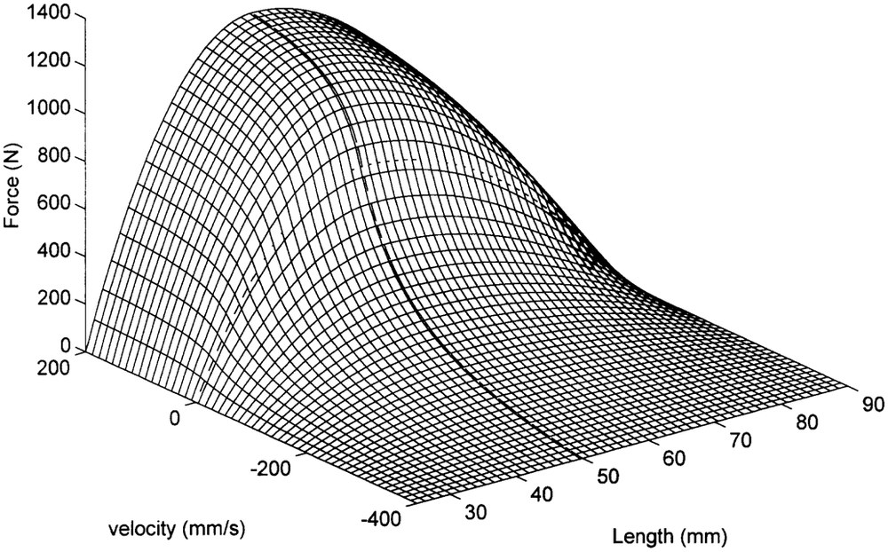
Force–length–velocity
Drag to turn it, and watch the two familiar curves appear as its edges
The model equation
Everything so far, in one line
F = F0 · a · FL(L) · FV(v)
F0
Maximum isometric force. Set by PCSA, pennation and fibre
type — the architecture from Part 01.
a
Activation, between 0 and 1. Supplied by the force–time
behaviour.
FL(L)
The normalised force–length factor at the current fibre
length.
FV(v)
The normalised force–velocity factor at the current fibre
velocity.
Three of the four terms are fractions between 0 and 1, so they can
only take force away from F0. The one exception is
FV when the muscle is being lengthened, where it rises above 1.
The model equation
Four dials, one product
From muscle force to joint moment
The full chain, and where each piece came from
T = r(θ) · F( L(θ), v, a )
F0 = F0( pennation, PCSA, fibre type )
Joint angle θ sets both the moment arm r and the fibre
length L — the same variable enters twice
Joint angular velocity sets the fibre velocity v, through the same
geometry
The nervous system supplies only a
Everything else is anatomy, and it is fixed for the duration of the movement
This is why a measured joint moment is never a measurement of
"muscle strength". It is a measurement of strength, architecture, geometry, length,
velocity and activation, all multiplied together.
All three properties are in play at every instant, in different
proportions. That is why they cannot be understood one at a time, and why the next lecture
lets you switch each of them off and watch what is lost.
The work loop
Force against length, round a complete cycle
Next: the Virtual Muscle Lab
The same model, with every property switchable
The app runs this model through a cycle and reports work and power,
positive, negative and net
It computes the same cycle four times, turning properties off:
Subtract one column from another and you have measured what that property
cost you.
It will also optimise the onset and offset for you, and you can
check its answer against the reasoning on the last slide
Every constant in the sidebar has appeared in this lecture: L0,
F0, vmax, curvature, and the two time constants
Come to the next lecture with a prediction: which of the three
properties costs the most work at 2 Hz, and does your answer change at 5 Hz?
Summary
STRUCTURE
Force comes from filament overlap. Sarcomeres in parallel give force,
in series give speed. Pennation trades speed for area, and the moment arm turns force
into torque.
THE THREE PROPERTIES
Force–length from overlap plus passive tissue. Force–velocity falling with
shortening speed and rising to 1.8 × F0 on lengthening. Force–time, with a
10 ms rise and a 40 ms fall.
THE MODEL
F = F0 · a · FL · FV, and
T = r(θ) · F. The terms multiply, so deficits compound — and in a cycle, the timing
matters as much as any of them.
If you remember one thing: a muscle's force is never a
single number. It is a product of how much tissue there is, how it is arranged,
how long it is, how fast it is moving, and how long ago you asked.